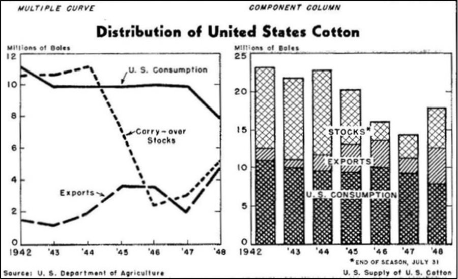

install.packages("ggplot2", "tidyr", "extrafont")tl;dr
Two years ago I won a data-viz recreation competition run by the Royal Statistical Society (RSS) using base R’s plotting. I wrote a short {ggplot2} how-to for RSS’s ‘Significance’ magazine that was never published1, so here it is now.
Recreate
This short code walkthrough will get you started on recreating Mary Eleanor Spear’s cotton plot (1952), as used in the Royal Statistical Society’s #CottonViz challenge. We’ll concentrate on the line chart for now.

The {ggplot2} package in R is a good choice, since we can build up the chart in steps: first, we’ll build a basic line chart, remove unneeded elements, fix the axes and finally add the labels. It won’t look perfectly like Spear’s original, but we’ll get close.
This isn’t a guide to learn {ggplot2}, so you may want to learn the basics first. Alternatively, I wrote a blog post about building Spear’s entire visualisation using base R only.
Requirements
First, some preparation. If you haven’t already, install the {ggplot2} package for plotting, {tidyr} data reshaping and {extrafont} for font handling.
You can download for free the Routed Gothic font by Darren Embry, which is a good approximation of the stencil lettering used by Spear. Installation will depend on your system, but in macOS you can simply drag the font files to the Font Book app. When you attach {extrafont} it’ll fetch automatically your installed fonts (including Routhed Gothic) so you can use them in R.
library(extrafont)Tidying up
The cotton dataset is quite small, so we can create the dataframe ourselves. It provides information on the supply of cotton in the USA in the 1940s.
cotton_raw <- data.frame(
year = 1942:1948,
us_consumption = c(11160, 9993, 9693, 9423, 10072, 9374, 7833),
exports = c(1480, 1139, 2007, 3613, 3545, 1968, 4785),
stocks = c(10657, 10744, 11164, 7326, 2530, 3080, 5283),
total_supply = c(23297, 21876, 22864, 20362, 16147, 14422, 17901)
)It’s preferable to make the data ‘tidy’ so that there’s one row per year and consumption type, and one column for each variable. The {tidyr} package can help us pivot the data to ‘long’ format from this ‘wide’ format.
library(tidyr)
cotton <- cotton_raw %>%
pivot_longer(
c(us_consumption, exports, stocks),
names_to = "consumption_type", values_to = "boles"
)
head(cotton, 4) # preview first few rows# A tibble: 4 × 4
year total_supply consumption_type boles
<int> <dbl> <chr> <dbl>
1 1942 23297 us_consumption 11160
2 1942 23297 exports 1480
3 1942 23297 stocks 10657
4 1943 21876 us_consumption 9993How-to
Step 1: line chart
Now we can create a basic line chart of the data with geom_line() and set with scale_linetype_manual() a unique dashed line per group. Further arguments set the title and the typeface to be used throughout the plot, while a small tweak to theme() adjusts the title’s position.
library(ggplot2)
p1 <- ggplot() +
geom_line(
data = cotton,
aes(x = year, y = boles / 1000, linetype = consumption_type),
linewidth = 1.5
) +
scale_linetype_manual(values = c("longdash", "dashed", "solid")) +
labs(title = "Millions of Boles") +
theme(
plot.title = element_text(hjust = -0.05),
text = element_text(family = "Routed Gothic")
)
p1Step 2: remove features
Let’s clear away the unneeded features: the background panel, the axes titles and the legend. You can empty these with element_blank() in the theme() function.
p2 <- p1 +
theme(
panel.background = element_blank(),
axis.title = element_blank(),
legend.position = "none"
)
p2Step 3: correct the axes
Now we can address the axes. Use the scale_*_continuous() functions to set the axes values, limits, origin and labels. With sec.axis you can create a secondary y-axis that mirrors the first, then remove the tick labels in the theme() function. You can also put a box around the chart area with the panel.border argument.
p3 <- p2 +
scale_x_continuous(
breaks = seq(1942, 1948, 1),
labels = c("1942", paste0("'", 43:48)),
expand = c(0, 0)
) +
scale_y_continuous(
breaks = seq(0, 12, 2),
limits = c(0, 12),
expand = c(0, 0),
sec.axis = dup_axis()
) +
theme(
axis.ticks = element_line(linewidth = c(0, rep(0.5, 5), 0)),
axis.ticks.length = unit(-0.5, "lines"),
axis.text.y.right = element_blank(),
panel.border = element_rect(fill = NA, linewidth = 1)
)
p3Step 4: labels
The only missing features are the labels and arrows, which can be added with the annotate() and geom_segment(), respectively. A bit of trial-and-error will help you find the correct coordinates to place these elements.
p4 <- p3 +
annotate(
geom = "text",
x = c(1946.1, 1945.9, 1943.75),
y = c(10.8, 7.1, 3.2),
label = c("U. S. Consumption", "Carry – over\nStocks", "Exports"),
family = "Routed Gothic"
) +
geom_segment(
aes(
x = c(1945.2, 1945.3, 1944.2),
y = c(10.5, 7.4, 3.1),
xend = c(1945, 1945.1, 1944.4),
yend = c(9.7, 7.1, 2.8)
),
arrow = arrow(
length = unit(2, "mm"),
type = "closed"
)
)
p4
Next steps
Finally we’ve got a lineplot that looks pretty close to Spear’s visualisation. What subtle differences do you notice, though? Try to find ways to improve them.
Next, try to recreate the stacked-barchart from Spear’s original and then arrange the plots with a main title and surrounding text labels. The {ggpattern} package may help you recreate the hatchlines on the bars and {patchwork} could help with the arrangement of the plot and text elements.
Full base R alternative
For the original challenge I used only base R’s plotting system rather than {ggplot2}. This is what my submitted image looked like:

You can read more about it in the accompanying blog post and you can find the original code on GitHub.
Environment
Session info
Last rendered: 2023-07-06 19:27:43 BSTR version 4.3.1 (2023-06-16)
Platform: aarch64-apple-darwin20 (64-bit)
Running under: macOS Ventura 13.2.1
Matrix products: default
BLAS: /Library/Frameworks/R.framework/Versions/4.3-arm64/Resources/lib/libRblas.0.dylib
LAPACK: /Library/Frameworks/R.framework/Versions/4.3-arm64/Resources/lib/libRlapack.dylib; LAPACK version 3.11.0
locale:
[1] en_US.UTF-8/en_US.UTF-8/en_US.UTF-8/C/en_US.UTF-8/en_US.UTF-8
time zone: Europe/London
tzcode source: internal
attached base packages:
[1] stats graphics grDevices utils datasets methods base
other attached packages:
[1] ggplot2_3.4.2 tidyr_1.3.0
loaded via a namespace (and not attached):
[1] vctrs_0.6.3 cli_3.6.1 knitr_1.43.1 rlang_1.1.1
[5] xfun_0.39 purrr_1.0.1 generics_0.1.3 jsonlite_1.8.7
[9] labeling_0.4.2 glue_1.6.2 colorspace_2.1-0 htmltools_0.5.5
[13] scales_1.2.1 fansi_1.0.4 rmarkdown_2.23 grid_4.3.1
[17] munsell_0.5.0 evaluate_0.21 tibble_3.2.1 fastmap_1.1.1
[21] yaml_2.3.7 lifecycle_1.0.3 compiler_4.3.1 dplyr_1.1.2
[25] htmlwidgets_1.6.2 pkgconfig_2.0.3 rstudioapi_0.14 farver_2.1.1
[29] digest_0.6.31 R6_2.5.1 tidyselect_1.2.0 utf8_1.2.3
[33] pillar_1.9.0 magrittr_2.0.3 gtable_0.3.3 tools_4.3.1
[37] withr_2.5.0 Footnotes
At least I don’t think so. I can’t find it by searching on the website, anyway. Also, enough time has passed that certain bits of the original code have since been deprecated in {ggplot2}, lol.↩︎
Reuse
CC BY-NC-SA 4.0